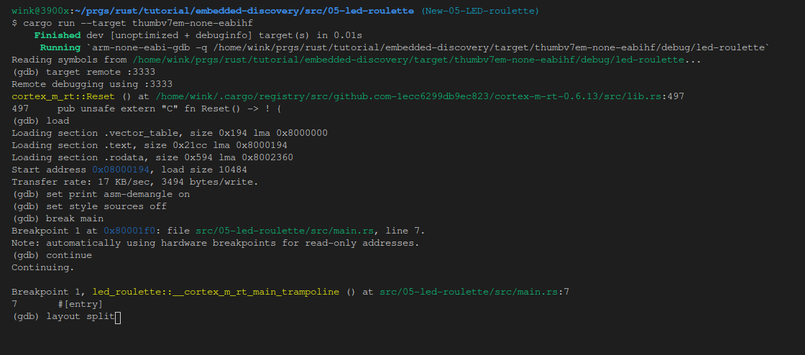
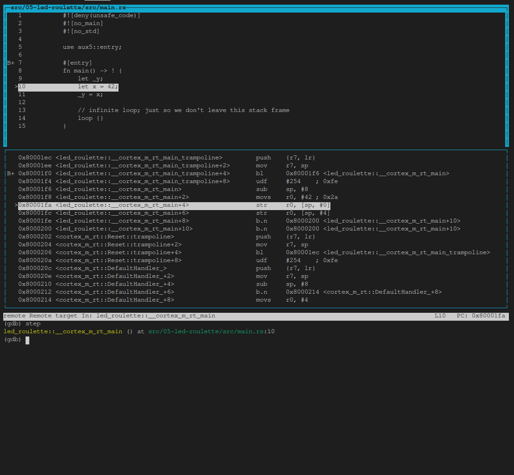
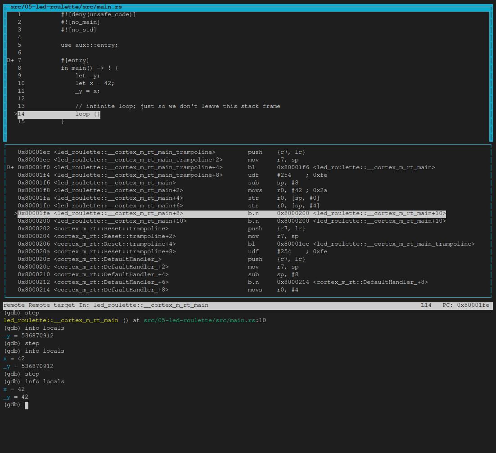
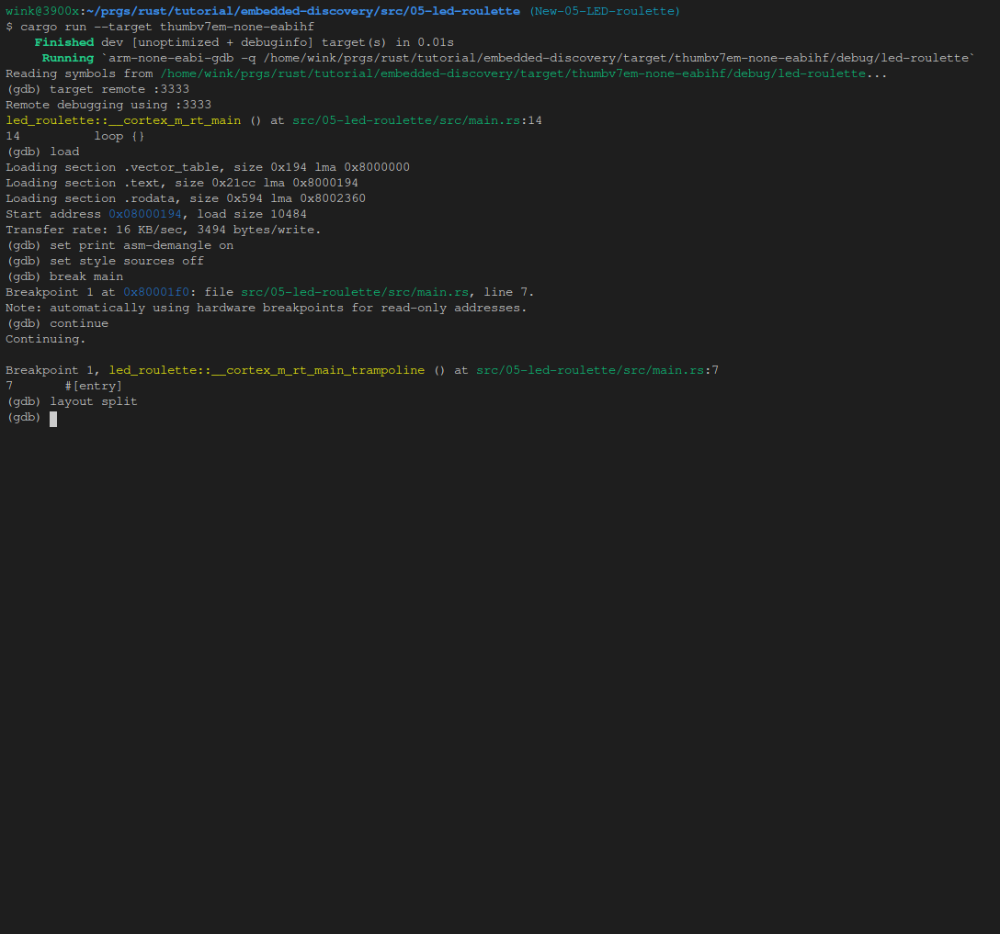

Debug it
We are already inside a debugging session so let’s debug our program.
After the load command, our program is stopped at its entry point. This is indicated by the
“Start address 0x8000XXX” part of GDB’s output. The entry point is the part of a program that a
processor / CPU will execute first.
The starter project I’ve provided to you has some extra code that runs before the main function.
At this time, we are not interested in that “pre-main” part so let’s skip right to the beginning of
the main function. We’ll do that using a breakpoint. Issue break main at the (gdb) prompt:
NOTE For these GDB commands I generally won’t provide a copyable code block as these are short and it’s faster just to type them yourself. In addition most can be shortened. For instance
bforbreakorsforstep, see GDB Quick Reference for more info or use Google to find your others. In addition, you can use tab completion by typing the first few letters than one tab to complete or two tabs to see all possible commands.Finally,
help xxxxwhere xxxx is the command will provide short names and other info:(gdb) help s step, s Step program until it reaches a different source line. Usage: step [N] Argument N means step N times (or till program stops for another reason).
(gdb) break main
Breakpoint 1 at 0x80001f0: file src/05-led-roulette/src/main.rs, line 7.
Note: automatically using hardware breakpoints for read-only addresses.
Next issue a continue command:
(gdb) continue
Continuing.
Breakpoint 1, led_roulette::__cortex_m_rt_main_trampoline () at src/05-led-roulette/src/main.rs:7
7 #[entry]
Breakpoints can be used to stop the normal flow of a program. The continue command will let the
program run freely until it reaches a breakpoint. In this case, until it reaches #[entry]
which is a trampoline to the main function and where break main sets the breakpoint.
Note that GDB output says “Breakpoint 1”. Remember that our processor can only use six of these breakpoints so it’s a good idea to pay attention to these messages.
OK. Since we are stopped at #[entry] and using the disassemble /m we see the code
for entry, which is a trampoline to main. That means it sets up the stack and then
invokes a subroutine call to the main function using an ARM branch and link instruction, bl.
(gdb) disassemble /m
Dump of assembler code for function main:
7 #[entry]
0x080001ec <+0>: push {r7, lr}
0x080001ee <+2>: mov r7, sp
=> 0x080001f0 <+4>: bl 0x80001f6 <_ZN12led_roulette18__cortex_m_rt_main17he61ef18c060014a5E>
0x080001f4 <+8>: udf #254 ; 0xfe
End of assembler dump.
Next we need to issue a step GDB command which will advance the program statement
by statement stepping into functions/procedures. So after this first step command we’re
inside main and are positioned at the first executable rust statement, line 10, but it is
not executed:
(gdb) step
led_roulette::__cortex_m_rt_main () at src/05-led-roulette/src/main.rs:10
10 let x = 42;
Next we’ll issue a second step which executes line 10 and stops at
line 11 _y = x;, again line 11 is not executed.
NOTE We could have pressed enter at the second
(gdb)prompt and it would have reissued the previous statement,step, but for clarity in this tutorial we’ll generally retype the command.
(gdb) step
11 _y = x;
As you can see, in this mode, on each step command GDB will print the current statement along
with its line number. As you’ll see later in the TUI mode you’ll not see the statement
in the command area.
We are now “on” the _y = x statement; that statement hasn’t been executed yet. This means that x
is initialized but _y is not. Let’s inspect those stack/local variables using the print
command, p for short:
(gdb) print x
$1 = 42
(gdb) p &x
$2 = (*mut i32) 0x20009fe0
(gdb) p _y
$3 = 536870912
(gdb) p &_y
$4 = (*mut i32) 0x20009fe4
As expected, x contains the value 42. _y, however, contains the value 536870912 (?). This
is because _y has not been initialized yet, it contains some garbage value.
The command print &x prints the address of the variable x. The interesting bit here is that GDB
output shows the type of the reference: *mut i32, a mutable pointer to an i32 value. Another
interesting thing is that the addresses of x and _y are very close to each other: their
addresses are just 4 bytes apart.
Instead of printing the local variables one by one, you can also use the info locals command:
(gdb) info locals
x = 42
_y = 536870912
OK. With another step, we’ll be on top of the loop {} statement:
(gdb) step
14 loop {}
And _y should now be initialized.
(gdb) print _y
$5 = 42
If we use step again on top of the loop {} statement, we’ll get stuck because the program will
never pass that statement.
NOTE If you used the
stepor any other command by mistake and GDB gets stuck, you can get it unstuck by hittingCtrl+C.
As introduced above the disassemble /m command can be used to disassemble the program around the
line you are currently at. You might also want to set print asm-demangle on
so the names are demangled, this only needs to be done once a debug session. Later
this and other commands will be placed in an initialization file which will simplify
starting a debug session.
(gdb) set print asm-demangle on
(gdb) disassemble /m
Dump of assembler code for function _ZN12led_roulette18__cortex_m_rt_main17h51e7c3daad2af251E:
8 fn main() -> ! {
0x080001f6 <+0>: sub sp, #8
0x080001f8 <+2>: movs r0, #42 ; 0x2a
9 let _y;
10 let x = 42;
0x080001fa <+4>: str r0, [sp, #0]
11 _y = x;
0x080001fc <+6>: str r0, [sp, #4]
12
13 // infinite loop; just so we don't leave this stack frame
14 loop {}
=> 0x080001fe <+8>: b.n 0x8000200 <led_roulette::__cortex_m_rt_main+10>
0x08000200 <+10>: b.n 0x8000200 <led_roulette::__cortex_m_rt_main+10>
End of assembler dump.
See the fat arrow => on the left side? It shows the instruction the processor will execute next.
Also, as mentioned above if you were to execute the step command GDB gets stuck because it
is executing a branch instruction to itself and never gets past it. So you need to use
Ctrl+C to regain control. An alternative is to use the stepi(si) GDB command, which steps
one asm instruction, and GDB will print the address and line number of the statement
the processor will execute next and it won’t get stuck.
(gdb) stepi
0x08000194 14 loop {}
(gdb) si
0x08000194 14 loop {}
One last trick before we move to something more interesting. Enter the following commands into GDB:
(gdb) monitor reset halt
Unable to match requested speed 1000 kHz, using 950 kHz
Unable to match requested speed 1000 kHz, using 950 kHz
adapter speed: 950 kHz
target halted due to debug-request, current mode: Thread
xPSR: 0x01000000 pc: 0x08000194 msp: 0x2000a000
(gdb) continue
Continuing.
Breakpoint 1, led_roulette::__cortex_m_rt_main_trampoline () at src/05-led-roulette/src/main.rs:7
7 #[entry]
(gdb) disassemble /m
Dump of assembler code for function main:
7 #[entry]
0x080001ec <+0>: push {r7, lr}
0x080001ee <+2>: mov r7, sp
=> 0x080001f0 <+4>: bl 0x80001f6 <led_roulette::__cortex_m_rt_main>
0x080001f4 <+8>: udf #254 ; 0xfe
End of assembler dump.
We are now back at the beginning of #[entry]!
monitor reset halt will reset the microcontroller and stop it right at the beginning of the program.
The continue command will then let the program run freely until it reaches a breakpoint, in
this case it is the breakpoint at #[entry].
This combo is handy when you, by mistake, skipped over a part of the program that you were interested in inspecting. You can easily roll back the state of your program back to its very beginning.
The fine print: This
resetcommand doesn’t clear or touch RAM. That memory will retain its values from the previous run. That shouldn’t be a problem though, unless your program behavior depends of the value of uninitialized variables but that’s the definition of Undefined Behavior (UB).
We are done with this debug session. You can end it with the quit command.
(gdb) quit
A debugging session is active.
Inferior 1 [Remote target] will be detached.
Quit anyway? (y or n) y
Detaching from program: $PWD/target/thumbv7em-none-eabihf/debug/led-roulette, Remote target
Ending remote debugging.
For a nicer debugging experience, you can use GDB’s Text User Interface (TUI). To enter into that mode enter one of the following commands in the GDB shell:
(gdb) layout src
(gdb) layout asm
(gdb) layout split
NOTE Apologies to Windows users, the GDB shipped with the GNU ARM Embedded Toolchain may not support this TUI mode
:-(.
Below is an example of setting up for a layout split by executing the follow commands.
As you can see we’ve dropped passing the --target parameter:
$ cargo run
(gdb) target remote :3333
(gdb) load
(gdb) set print asm-demangle on
(gdb) set style sources off
(gdb) break main
(gdb) continue
Here is a command line with the above commands as -ex parameters to save you some typing,
shortly we’ll be providing an easier way to execute the initial set of commands:
cargo run -- -q -ex 'target remote :3333' -ex 'load' -ex 'set print asm-demangle on' -ex 'set style sources off' -ex 'b main' -ex 'c' target/thumbv7em-none-eabihf/debug/led-roulette
And below is the result:

Now we’ll scroll the top source window down so we see the entire file and execute layout split and then step:

Then we’ll execute a few info locals and step’s:
(gdb) info locals
(gdb) step
(gdb) info locals
(gdb) step
(gdb) info locals

At any point you can leave the TUI mode using the following command:
(gdb) tui disable

NOTE If the default GDB CLI is not to your liking check out gdb-dashboard. It uses Python to turn the default GDB CLI into a dashboard that shows registers, the source view, the assembly view and other things.
Don’t close OpenOCD though! We’ll use it again and again later on. It’s better just to leave it running. If you want to learn more about what GDB can do, check out the section How to use GDB.
What’s next? The high level API I promised.